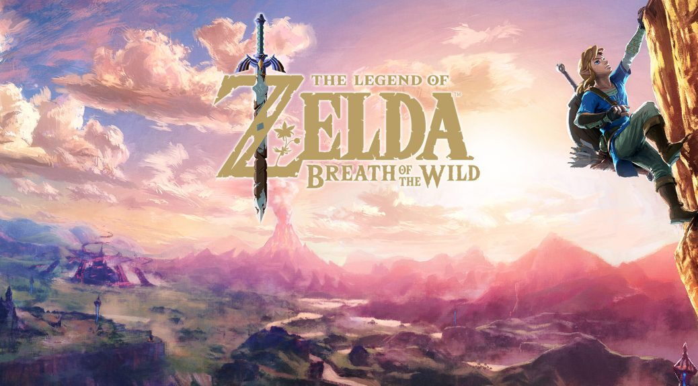
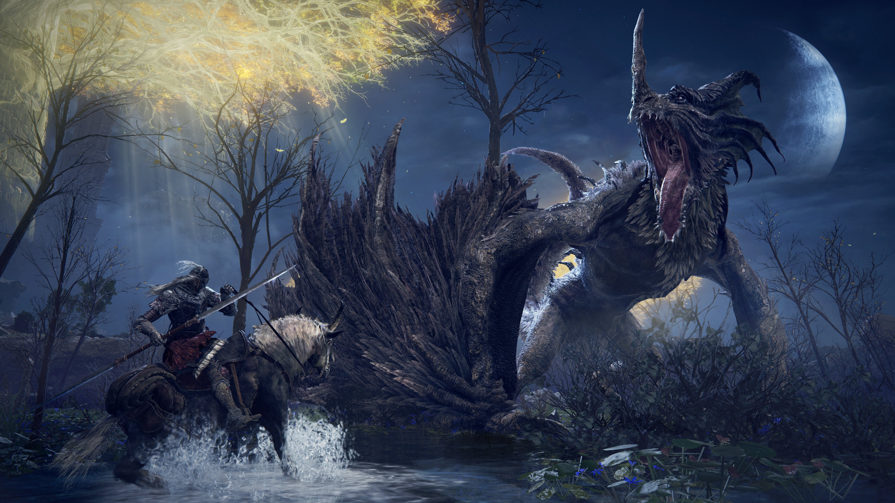

The Legend of Zelda Breath of the Wild Critics

"Where it takes mechanics from others in the industry, it improves upon them; where it introduces new ones, you slap your forehead in amazement that it hasn’t been done before. Breath of the Wild is development done right, and damn near the best game you’ll play all year" - GameGrin
"The Legend of Zelda: Breath of the Wild is nothing short of a masterpiece. The changes made to this game make it both brand new and familiar. The world the game brings us to is vast, beautiful and breathtaking and the soundtrack and sound design are absolutely phenomenal. As a man who has interest in game design this game is a great lesson in how it's done, as a gamer this was a great game to play and as a long time fan of the series I was just so happy I got to play this game. The Legend of Zelda: Breath of the Wild was set to be a one of a kind experience and indeed it was." - Vgames
Ghost Of Tsushima Critics

"The PlayStation 4 gets to bow out of this console generation in suitably epic fashion with this incredible title. Ghost of Tsushima sets a new standard in open-world action games with one of the best games of this generation or any other, for that matter." - The Digital Fix
"While many of the elements here made their debuts in other games in the genre, Sucker Punch does an amazing job of weaving them together in a way that not only creates a satisfying gameplay experience but also enhances an already stellar narrative. I cannot think of a better way for Sony to send-off the generation." -ZTGD
Sekiro: Shadows Die Twice Critics

"While more difficult initially, it becomes more approachable and easier the further in you get and the more you adapt to the combat. Since you are not leveling in the same way as the other games, scaling does not work the same way. Once you master the basics, you can master the game. Sekiro is an absolute must buy for From Software fans and anyone willing to put in the work to really get a grasp of the flow of combat." -Gaming Age
"The joyous sense of freedom in being able to engage and disengage a situation as I effortlessly transitioned between stealth and combat- the feeling of excitement as the awe-inspiring bosses and set pieces set the bar to new heights both in spectacle and design, Sekiro is a masterpiece that will influence future games to come for generations." -ZTGD
Elden Ring Critics

"Elden Ring is a stunning achievement from a literal video game architecture perspective, along with creating a difficult but not wildly punishing game that everyone, even non-Soulsborne devotees, should be able to enjoy. I have not been this impressed with an open world since Skyrim, and Elden Ring even surpasses that in many ways. It’s an easy game to recommend to anyone and everyone, and deserves the explosive sales success we’ve seen, dwarfing old FromSoft records. Elden Ring is a gaming achievement the likes of which we rarely seen, and you will be remiss to not pick it up and see what the hype is about for yourself." -Forbes
"Never before has such detail and passion been offered to the open world genre. Elden Ring is a masterclass of game design. From the massive, dense open world to the like-clockwork dance of combat, the amazing character design and seemingly unlimited gameplay choices. Each element of the game has been carefully crafted with love and purpose, making every little or large moment something worth discovering. Elden Ring is truly something special and this is going to be an incredibly tough act to follow for any open world game that comes after .-PlayStation Country